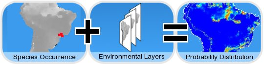
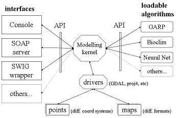

|  |
Models are generated by an algorithm that receives as input a set of occurrence points (latitude/longitude) and a set of environmental layer files. It's being written in C++ ANSI with platform independence in mind. It accepts different algorithms (now Bioclim and simple cartesian distance algorithms, GARP, Climate Space Model, and in the near future GAM, GLM, Neural Nets, etc). It uses GDAL to read several map file formats and proj4 to convert between different georeferencing systems and projections.
|  |
A client-server architecture will be used as a first approach, enabling the existence of different client interfaces (desktop, command line and web-based). In the future some tasks could be performed in a distributed way, including the possibility of running separately the algorithms in remote cluster machines. Its source code is available at sourceforge for all interested developers.